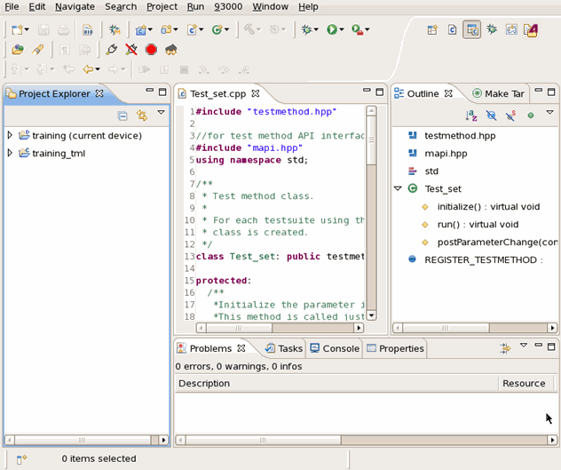

C/C++ perspective
The C/C++ perspective contains the views necessary to program universal test methods, in detail:
- Create universal test method projects and class source files
- Edit test method source code
- Compile the sources and build a test method shared library

For more information on available perspectives and how you can customize a perspective, see Perspectives.
This perspective contains the following views:
- Project explorer
This view shows your test method projects and classes in a tree structure. It allows easy navigation to the desired program code. You can create a new test method project and class from this view.
- Editors
The editor pane can have multiple editors. Individual editors can be activated by clicking the tab for the editor.
The C/C++ editor has specialized features for editing and debugging test method programs. Hence, you can edit and debug your test method programs in one editor.
On debugging, this editor operates as the debugger's source viewer. You can set the breakpoints in this editor and debug your test application with the Console, Variables, Expressions, Breakpoints, and Waveform views quickly and efficiently.
- Outline
This view shows an outline of a file which is opened in the editor. The content shown in this view is specific to the current editor.
- Problems
This view shows errors or warnings and the locations of them in the list form. If you double-click an error in the list, the cursor moves to the line with the error in the editor
- Console
This view shows the output of the execution of your program and enables you to enter input for the program
- Tasks
This view shows all the tasks you entered in the current workspace. You can find a task quickly by double clicking it.
- Properties
This view shows the properties of an object that you are highlighting. For example, the location and modified date of a test method project.
Functional changes
- Introduced before SmarTest 6.3.2